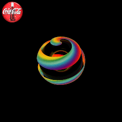
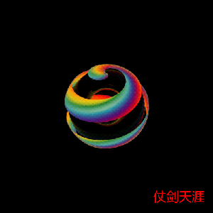

背景
动态的GIF图片具有特殊性，对图片的处理缩放、裁剪、加水印，需要一帧帧图片处理。我用过的图片的处理库有PILlow、ImageMagick/GraphicsMagick、Opencv。这些库对动态GIF的支持如下：
- PIllow：支持读取动态GIF图片为单独帧，但是如果动态GIF的的帧使用自己的调色板时，颜色失真很严重，不支持动态GIF保存。
- ImageMagick: 支持动态GIF的读和写，包括解帧合帧。
- GraphicsMagick: 从ImageMagick库fork出来，保留核心功能，针对稳定性、性能进行改进，对GIF支持和ImageMagick一样。
- Opencv: 不支持GIF读写。
其中wand为ImageMagick的python封装，crop、resize、sample操作可以直接针对整个GIF，其他操作需要针对每一帧处理，然后合成保存。
pgmagick为GraphicsMagick的python封装，保留了c的数据类型，用起来稍麻烦，scale操作可以针对GIF，其他也需要解帧处理。
本文重点介绍wand如何处理GIF。
wand安装
wand依赖ImageMagick。
debian系统，直接安装
|
然后使用pip安装wand。
|
裁剪crop
wand对动态GIF支持裁剪，对所有的帧都生效。
函数原型：
|
参数
- left (numbers.Integral) – x-offset of the cropped image. default is 0
- top (numbers.Integral) – y-offset of the cropped image. default is 0
- right (numbers.Integral) – second x-offset of the cropped image. default is the width of the image. this parameter and width parameter are exclusive each other
- bottom (numbers.Integral) – second y-offset of the cropped image. default is the height of the image. this parameter and height parameter are exclusive each other
- width (numbers.Integral) – the width of the cropped image. default is the width of the image. this parameter and right parameter are exclusive each other
- height (numbers.Integral) – the height of the cropped image. default is the height of the image. this parameter and bottom parameter are exclusive each other
- reset_coords (bool) – optional flag. If set, after the rotation, the coordinate frame will be relocated to the upper-left corner of the new image. By default is True.
- gravity (GRAVITY_TYPES) – optional flag. If set, will calculate the top and left attributes. This requires both width and height parameters to be included.
有两种用法：
- 把左上角坐标, 右下角坐标传人; 或者左上角坐标，宽、高传入。
- gravity，和相对于区域起点的偏移x偏移left，y偏移top，要裁剪的height、weight传入。
|
gravity指图片的9宫格的方位，分别有（’north_west’, ‘north’, ‘north_east’, ‘west’, ‘center’, ‘east’, ‘south_west’, ‘south’, ‘south_east’），如果设置这个值，那么起点坐标会重新设置。每个区域的的坐标起点会有所不同，可以看这里gravity。
sample/resize
wand对动态GIF支持缩放，对所有的帧都生效。
|
参数:
- width (numbers.Integral) – the width in the scaled image. default is the original width
- height (numbers.Integral) – the height in the scaled image. default is the original height
- filter (basestring, numbers.Integral) – a filter type to use for resizing. choose one in FILTER_TYPES. default is ‘undefined’ which means IM will try to guess best one to use
- blur (numbers.Real) – the blur factor where > 1 is blurry, < 1 is sharp. default is 1
resize还可以带模糊功能，对整个GIF有效。
贴水印
除了裁剪，缩放，其他对动态GIF的操作都必须一帧帧处理，然后再合成。
wand提供sequence，保存解析出来的图片帧。
|
|
注意这里面需要注意的地方：
- 需要使用index_context打开进行帧修改，然后close（这里用with）才生效； 如果用
for frame in oriImg:需要append到一个新的Image容器修改才生效。 - 有些动态GIF不是每一帧大小都一样的，偏移背景的位置也不一样，wand中把这种信息保存在page中，page为四元组，（width, height, left, top）。贴水印的时候要注意转移坐标。
- 每打开一个Image，都需要close，否则有内存泄露。
下面看效果，贴一个coco的图片：

贴文字
使用caption函数
|
参数:
- text (basestring) – text to write
- left (numbers.Integral) – x offset in pixels
- top (numbers.Integral) – y offset in pixels
- width (numbers.Integral) – width of caption in pixels. default is width of the image
- height (numbers.Integral) – height of caption in pixels. default is height of the image
- font (wand.font.Font) – font to use. default is font of the image
- gravity (basestring) – text placement gravity. uses the current gravity setting of the image by default
看下面的代码：
|
caption函数设计直接传人text，但是我们其实不知道text占用多大， 需要先算出大小，然后调整放置的位置。
上面的流程：
- 创建一个font，包含字体文件路径，字体大小、字体颜色；
- 使用Drawing计算font占的大小；
- 使用font放置的位置；
- 使用caption函数。
下面看效果， 仗剑天涯 文字：
